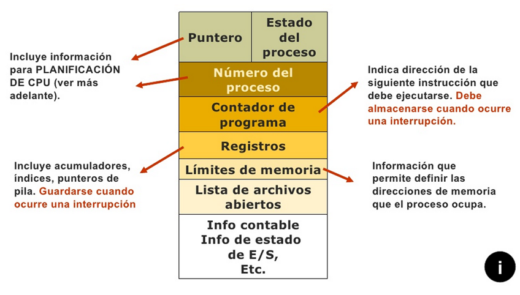
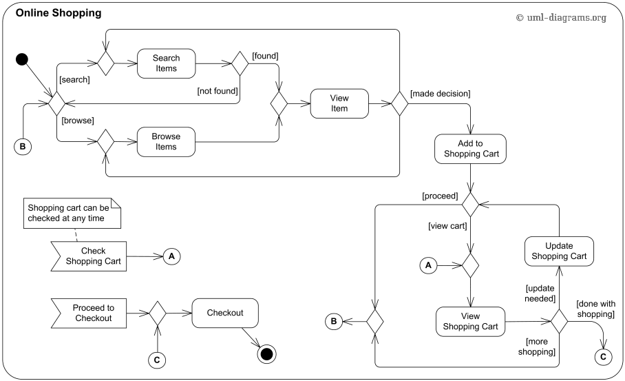
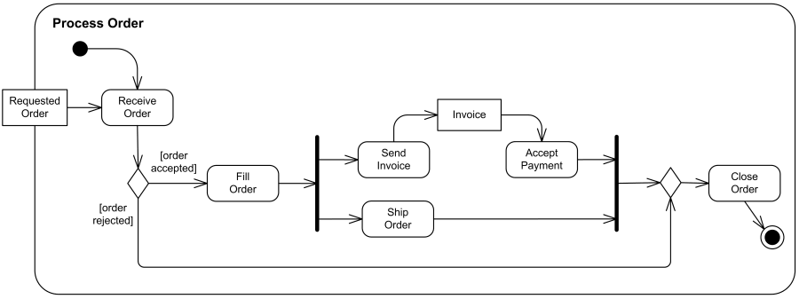

Unidad 1. Programación concurrente
Índice
Introducción
En este primer tema vamos a conocer los conceptos básicos relacionados con la programación concurrente, así como la mayoría de la terminología que vamos a trabajar y utilizar durante todo el curso.
En un mundo en el que cada vez los dispositivos electrónicos son cada vez más potentes, y veloces, el software debe ser capaz de aprovechar las características que le ofrecen tanto el hardware como los sistemas operativos.
Son muchas las tareas que requieren de un procesamiento rápido de cantidades ingentes de datos. Un par de ejemplos los tenemos en las aplicaciones Big Data e Inteligencia artificial. Estos dos campos son unos de los máximos exponentes en cuanto a programación concurrente.
¿Qué es para ti concurrencia?
Vamos a discutirlo en clase.
Iremos desgranando y definiendo el concepto a lo largo del tema
Objetivos
Los objetivos que alcanzaremos tras esta unidad son:
- Diferenciar entre programa y proceso
- Comprender qué es la concurrencia
- Conocer el concepto, diferencias y relación existente entre las dos unidades básicas de ejecución: procesos e hilos.
- Tener nociones sobre programación concurrente
- Entender el funcionamiento concurrente del SO y del hardware
Concurrencia
Según el diccionario de la RAE una de las acepciones de concurrencia es:
Coincidencia, concurso simultáneo de varias circunstancias.
Si cambiamos circunstancias por procesos, ya tendríamos una definición cercana a lo que significa concurrencia en el mundo digital.
Si nos fijamos, no es la primera vez que surge la palabra proceso en este texto, y es que los procesos son una pieza fundamental del puzle, por no decir la parte más importante.
Concurrencia vs Paralelismo
Monoproceso
Por mucho que tengamos varios procesos ejecutándose a la vez, si sólo tenemos un microprocesador para atenderlos a todos, estas tareas nunca van a poder ejecutarse a la vez.
Una posibilidad sería la ejecución secuencial de las tareas en el sistema. Se empieza a ejecutar una tarea y, hasta que esta no finaliza, el sistema no empieza a ejecutar la siguiente. Esto se correspondería con sistemas que sólo son capaces de hacer una tarea a la vez, algo raro hoy en día.
![Secuential execution of tasks (monoprocessor system)]()
Multiprogramación
Para que los procesos no tengan que esperar a que todos los demás se ejecuten, los sistemas aprovechan y exprimen los recursos al máximo, permitiendo la ilusión de que varios procesos se ejecutan de forma simultánea. Esto es lo que se conoce como multitarea.
![Concurrent execution of tasks (monoprocessor system)]()
Paralelismo
Con el avance de la tecnología, ahora la gran mayoría de dispositivos tienen capacidades de multiproceso, es decir, tienen más de un procesador para poder realizar varias tareas a la vez de forma real, no simulada. A este tipo de ejecución es a lo que llamamos paralelismo.
![Parallel execution of tasks (dual processor system)]()
núcleos vs hilos
Si habéis comprado un procesador hace poco, o estáis al día en cuanto al hardware, sabréis que una de las características de los procesadores es su número de núcleos (4, 8, 16).
Pero además, al número de núcleos lo acompaña otra característica que es el número de hilos o threads, que suele ser el doble que el de núcleos.
¿Qué implicación tienen los threads de un procesador con respecto a la concurrencia? ¿Si un equipo tiene 8 núcleos / 16 hilos significa eso que puede ejecutar 16 procesos a la vez?
Sistemas distribuidos
Posiblemente el ejemplo más famoso y conocido de sistema distribuido sea Internet. Internet aparece ante los usuarios como un enorme repositorio de documentos, es decir, como un único sistema capaz de proveer casi cualquier tipo de información o servicio que se necesite.
Ventajas e inconvenientes
Ventajas del procesamiento paralelo
- Ejecución simultánea de tareas.
- Disminuye el tiempo total de ejecución.
- Resuelve problemas complejos y de grandes dimensiones.
Inconvenientes del procesamiento paralelo
- Los programas paralelos son más difíciles de escribir.
- Mayor consumo de energía.
- Complejidad en la comunicación y sincronización.
Escalado de sistemas
Investiga las diferencias, ventajas e inconvenientes del escalado horizontal y el escalado vertical.
Condiciones de Bernstein
Una vez que sabemos qué es un programa concurrente y las distintas arquitecturas hardware que pueden soportarlo, vamos a ver qué partes de un programa se pueden ejecutar de forma concurrente y cuáles no.
Si observamos el siguiente código, queda claro que la primera instrucción se debe ejecutar antes que la segunda para que el resultado sea siempre el mismo (para los mismos datos de entrada).
x = x + 1;
y = x + 1;
Sin embargo, en un código como el siguiente el orden en el que se ejecuten las instrucciones no influye en el resultado final (valor de las variables). En este caso se pueden ejecutar las tres sentencias a la vez incrementando la velocidad de procesamiento.
x = 1;
y = 2;
z = 3;
A.J. Bernstein definió unas condiciones para determinar si dos conjuntos de instrucciones y se pueden ejecutar concurrentemente.
Para poder determinar si dos conjuntos de instrucciones se pueden ejecutar concurrentemente, se definen en primer lugar los siguientes conjuntos
- como el conjunto de lectura formado por todas las variables cuyos valores se leen durante la ejecución de las instrucciones del conjunto k.
- como el conjunto de escritura formado por todas las variables cuyos valores se actualizan durante la ejecución de las instrucciones del conjunto k.
Para que dos conjuntos de instrucciones y se puedan ejecutar concurrentemente, se deben cumplir estas tres condiciones de forma simultánea.
¿Cuáles de estas instrucciones se pueden ejecutar de forma concurrente entre sí?
a = x + y;
b = z - 1;
c = a - b;
w = c + 1;
Primero deberíamos obtener los conjuntos L y E para cada sentencia
Y ahora aplicarlas entre cada par de sentencias
// Sí se pueden ejecutar concurrentemente
// NO se pueden ejecutar concurrentemente
// Sí se pueden ejecutar concurrentemente
// NO se pueden ejecutar concurrentemente
// Sí se pueden ejecutar concurrentemente
// NO se pueden ejecutar concurrentemente
Procesos y programas
Un programa no es más que un conjunto de instrucciones u órdenes que le indican a un dispositivo qué acciones debe realizar con los datos recibidos.
Caja negra
Según la visión de un sistema como caja negra, un programa le indica al sistema cómo obtener unos datos de salida a partir de unos datos de entrada.
Sin embargo, un proceso es un programa en ejecución. Esto es, un proceso es una entidad activa y un programa es una entidad pasiva.
El proceso, por tanto, está representado por el contador del programa, el valor de los registros, la pila, el código ejecutable, su estado, ... todo lo necesario para la ejecución del programa por parte del SO.

Cada proceso es una entidad independiente. Cuando un programa se ejecuta, el sistema operativo crea un proceso. Si ese mismo programa se vuelve a ejecutar, se crearía un proceso distinto, teniendo en memoria dos instancias del mismo programa. Pero es importante recalcar que los dos procesos son independientes.
Programación concurrente
Podemos decir que dos procesos son concurrentes cuando la primera instrucción de uno de los procesos se ejecuta después de la primera y antes de la última de otro proceso.
La planificación alternando los instantes de ejecución, multitarea, hace que los procesos se ejecuten de forma concurrente. También la disponibilidad de varias unidades de proceso, multiproceso, permite la ejecución simultánea o paralela de procesos en el sistema.
Concurrencia
A los dos escenarios descritos anteriormente es a lo que vamos a denominar, de forma general, concurrencia.
¿Para qué?
Las principales razones por las que se utiliza una estructura concurrente son:
- Optimizar la utilización de los recursos: Podremos simultanear las operaciones de E/S en los procesos. La CPU estará menos tiempo ociosa.
- Proporcionar interactividad a los usuarios (y animación gráfica).
- Mejorar la disponibilidad: Servidor que no realice tareas de forma concurrente, no podrá atender peticiones de clientes simultáneamente.
- Conseguir un diseño conceptualmente más comprensible y mantenible: El diseño concurrente de un programa nos llevará a una mayor modularidad y claridad.
- Aumentar la protección: Tener cada tarea aislada en un proceso permitirá depurar la seguridad de cada proceso y poder finalizarlo en caso de mal funcionamiento sin que suponga la caída del sistema.
Además, los actuales avances tecnológicos hacen necesario tener en cuenta la concurrencia en el diseño de las aplicaciones para aprovechar su potencial. Los nuevos entornos hardware son:
- Microprocesadores con múltiples núcleos que comparten la memoria principal del sistema.
- Entornos multiprocesador con memoria compartida.
- Entornos distribuidos y servicios cloud.
Comunicación y sincronización entre procesos
Cuando varios procesos se ejecutan concurrentemente puede haber procesos que colaboren para un determinado fin mientras que puede haber otros que compitan por los recursos del sistema.
En ambos casos se hace necesaria la introducción de mecanismos de comunicación y sincronización entre procesos.
Programación concurrente
Precisamente del estudio de esos mecanismos de sincronización y comunicación trata la programación concurrente y este módulo de PSP.
Si pensamos en la forma en la que un proceso puede comunicarse con otro, se nos plantean estas dos:
- Intercambio de mensajes: Es la forma que se utiliza habitualmente cuando los procesos se encuentran en máquinas diferentes. Los procesos intercambian información siguiendo un protocolo previamente establecido.
- Recursos (o memoria) compartidos: Sólo se puede utilizar cuando los dos procesos se encuentran en la misma máquina y permite la sincronización de los procesos en función del valor o estado de un recurso compartido.
También podemos ver el tipo de comunicación en función de la sincronía que mantengan los procesos durante la comunicación:
- Síncrona: El emisor queda bloqueado hasta que el receptor recibe el mensaje. Ambos
se sincronizan en el momento de la recepción del mensaje. - Asíncrona: El emisor continúa con su ejecución inmediatamente después de emitir el
mensaje, sin quedar bloqueado.
Servicios e hilos
Un programa, como ya hemos dicho, se compone de un conjunto de sentencias (operaciones y verificaciones) y un flujo de ejecución. La línea de flujo de control establece, de acuerdo con la estructura del propio programa y de los datos que maneja, el orden en que deben ejecutarse las sentencias.
Atendiendo al número de líneas de flujo de control que tiene un programa, los procesos pueden ser:
- Secuenciales: Poseen un único flujo de control (monohilo)
- Concurrentes: Poseen varios hilos de ejecución (multihilo).
Programa secuencial (Arquitectura Von Neumann)
Cuando empezamos a programar, usamos el estilo de programación clásico, en el que se sigue el modelo conceptual de Von Neumann
Los programas secuenciales presentan una línea simple de control de flujo. Las operaciones de este tipo de programas están estrictamente ordenados como una secuencia temporal lineal.
El comportamiento del programa es solo función de la naturaleza de las operaciones individuales que constituye el programa y del orden en que se ejecutan (determinado por el conjunto de entradas que recibe).
En los programas secuenciales, el tiempo que tarda cada operación en ejecutarse no tiene consecuencias sobre el resultado.

La comprobación del correcto funcionamiento (verificación o depuración) de un programa secuencial es sencilla:
- Cada sentencia produce la respuesta correcta.
- Las sentencias se ejecutan en el orden esperado.
De aquí surgen algunos de los métodos básicos de pruebas de sistemas, como el de caja blanca.
Programa concurrente
En los programas concurrentes existen múltiples líneas de control de flujo. Las sentencias que constituyen el programa no se ejecutan siguiendo un orden que corresponda a una secuencia temporal lineal.
En los programas concurrentes el concepto de secuencialidad entre sentencias continua siendo muy importante. Sin embargo en los programas concurrentes es de orden parcial, mientras que, tal y como hemos comentado anteriormente, en los programas secuenciales era de orden estricto.

En los programas concurrentes la secuencialización entre procesos concurrentes se llama sincronización.
Este orden parcial implica que los programas concurrentes no tienen porqué ser deterministas, es decir, que ante el mismo conjunto de datos de entrada no siempre se va a obtener el mismo resultado.
Indeterminismo
Que existan diferentes salidas para el mismo conjunto de datos de entrada no significa necesariamente que un programa concurrente sea incorrecto.
Si observamos el siguiente ejemplo de pseudocódigo
public class TestClass {
int x;
public void testMethod1() {
for (int i=1; i <= 5; i++) {
x++;
}
}
public void testMethod2() {
for (int j=1; j <= 5; j++) {
x++;
}
}
public void sequential() {
x = 0;
testMethod1();
testMethod2();
System.out.println(x);
}
public void parallel() {
x = 0;
// cobegin-coend means that both methods are run simultaneously
// These sentences doesn't exist in Java. They are used for
// sample purposes
cobegin
testMethod1();
testMethod2();
coend
System.out.println(x);
}
}
Valores de la variable x
¿Qué valor tendrá x tras ejecutar el método sequential?
¿Qué valor tendrá x tras ejecutar el método parallel?
Reseña histórica
La naturaleza y los modelos de interacción entre procesos de un programa concurrente fueron estudiados y descritos por Dijkstra (1968), Brinch Hansen (1973) y Hoare (1974).
Estos trabajos constituyeron los principios en que se basaron los sistemas operativos multiproceso de la década de los 70 y 80.
El indeterminismo inherente a los programas concurrentes hace que su análisis y validación sea más complejo. No obstante, para la comprobación del correcto funcionamiento (verificación o depuración) de un programa concurrente se requiere comprobar los mismos aspectos que en los programas secuenciales, pero con los siguientes nuevos aspectos:
- Las sentencias se pueden validar individualmente solo si no están acopladas por variables compartidas.
- Cuando existen variables compartidas, los efectos de interferencia entre las sentencias concurrentes pueden ser muy variados y la validación es muy difícil.
- Siempre que la secuencialidad entre tareas se lleve a cabo por sentencias explícitas de sincronización, el tiempo es un elemento que no influye sobre el resultado
Importante
Estos tres aspectos que se acaban de describir forman la base de toda la programación concurrente.
👁️ Conocerlos, entenderlos y saber aplicarlos es a lo que dedicaremos una parte importante de este curso.
Hilos vs procesos
Un hilo no es más que cada una de esas líneas de flujo que puede tener un proceso ejecutándose de forma concurrente. Un procesos es una unidad pesada de ejecución.
Así, un proceso estará formado por, al menos, un hilo de ejecución, el hilo principal. Si el proceso tiene varios hilos, cada uno es una unidad de ejecución ligera.
| Procesos | Hilos |
|---|---|
| Constan de uno o más hilos | Un hilo siempre existe dentro de un proceso |
| Son independientes unos de otros | Comparten los recursos del proceso de forma directa |
| Son gestionados por el SO | Son gestionados por el proceso |
| Se comunican a través del SO | La comunicación la controla el proceso |
En la imagen anterior se puede observar la relación existente entre la creación de un thread y la de su proceso asociado.
- El proceso define un espacio de memoria en el que reside. Los hilos comparten ese espacio de memoria. Dentro de ese espacio de memoria cada hilo tiene su espacio reservado, pero todos pueden compartir la memoria global del proceso y los recursos (ficheros, sockets, etc.) que el proceso tenga abiertos.
- Como ya hemos visto, cada proceso tiene su PCB con información relativa al proceso.
- Los hilos, de forma similar, tienen su TCB (Thread Control Block) en el que guardan la información específica de cada hilo (Contador de programa, puntero a la pila, estado del thread, registros y un puntero al PCB).
Servicios
Un servicio es un proceso que, normalmente, es cargado durante el arranque del sistema operativo. Al no necesitar interacción con el usuario, los servicios suelen ejecutarse en forma de *demonios, quedan su ejecución en segundo plano.
Recibe el nombre de servicio ya que es un proceso que queda a la espera de que otro le pida que realice una tarea. Como deben atender las solicitudes de varios procesos, los servicios suelen ser programas multihilo.